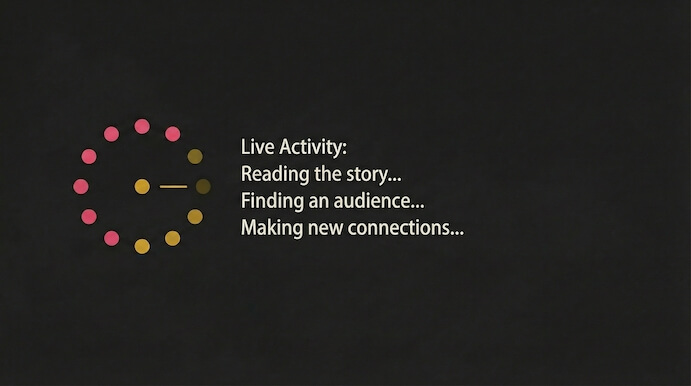

CASE STUDY

Storytelling drives $2M automation pipeline
The Challenge: Clients struggled to get success stories in front of the right decision-makers without relying on slow, expensive traditional campaigns.
The Solutions: An AI-enhanced outreach engine that analyzed strategic goals, matched them to third-party audience data, and used AI to automatically source, enrich, and run highly personalized, storytelling-driven outreach sequences.
The Result: 100+ highly engaged leads per client, generating $2M+ in pipeline and $188k in closed-won revenue over 12 months.